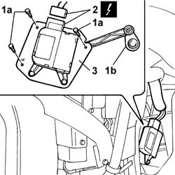
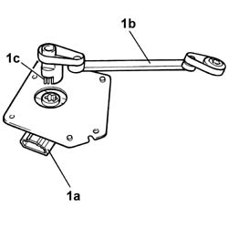
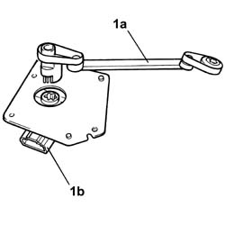

5040D86 air conditioner right air mixture flap control motor - r r
- Path
- Procedures > 50 auxiliary units > 5040 AIR CONDITIONING CASING AND COMPONENTS > 5040D air conditioner controls > 5040D86 air conditioner right air mixture flap control motor - r r
- Kind
- repair procedure (removal / refitting; the operation number is the code)
- Applies to
- all engines; all production periods
- Interactive page
- https://sloeber94.github.io/elrnDB-lThss/en/#/79245
Applies to: all engines; all production periods
 Removing
Removing
 Refitting
Refitting- Disconnect the negative battery terminal.
See in Op. 5040D19 CONTROL UNIT with CONTROL PANEL for rear air conditioning - R.R.
See in Op. 7040L70 Tunnel cover REAR COVER - R.R.
See in Op. 5010C32 Air VENT in tunnel cover for rear seats
See in Op. 7040A65 passenger compartment box lock , one , r r
See in Op. 7045A10 FRONT SEAT (one) left or right - R.R.
See in Op. 7040L37 GEAR LEVER SURROUNDING TRIM - R.R.
See in Op. 7040L72 GLASS HOLDER on tunnel cover - R.R.
See in Op. 7040L28 TRIM for switch holder on tunnel cover - R.R.
See in Op. 7040L20 TUNNEL COVER - R.R.
See in Op. 7040A60 UNDER FACIA TRIM - R.R.
See in Op. 7040A58 TRIM on dashboard - R.R.
See in Op. 7040A44 INSTRUMENT PANEL LEFT SIDE TRIM - R.R.
See in Op. 7040A45 INSTRUMENT PANEL RIGHT SIDE TRIM - R.R.
See in Op. 5010C56 LEFT air OUTLET in dashboard - R.R.
See in Op. 5010C62 Air VENT UNIT and SIDE air DIFFUSER in dashboard - R.R.:
See in Op. 5010C02 RIGHT SIDE air VENT in dashboard (passenger side) - R.R.
See in Op. 5010C58 Right air OUTLET in dashboard - R.R.
See in Op. 7040G20 GLOVE COMPARTMENT BULB HOLDER IN DASHBOARD
-
See in Op. 7040A31 Compartment in dashboard - R.R.
See in Op. 7040A14 Glove compartment FLAP in dashboard - R.R.
See in Op. 7040G24 Glove compartment light SWITCH - R.R.
See in Op. 5580C26 passenger air bag deactivating switch - r r
See in Op. 5580C22 AIR BAG MODULE (passenger side) - R.R.
See in Op. 4110A10 STEERING WHEEL - R.R. for replacement or checks
-
See in Op. 5580C12 CLOCK SPRING for AIR BAG system - R.R.
See in Op. 5550A10 stalk unit assembly - r+r
See in Op. 7040A23 Instrument panel SURROUND in dashboard
See in Op. 5560B11 ANALOGUE CONTROL PANEL - R.R. or Replace
See in Op. 5540A20 Exterior lights SWITCH PANEL and instrument panel light dimmer - R.R.
- [5580P26]
See in Op. 5580P20 CONNECT CONTROL UNIT - R.R.
See in Op. 7040A20 LEFT dashboard LOWER TRIM - R.R.
See in Op. 5040D60 ACTUATOR for one diffused air vent flap, left or right - R.R.
See in Op. 5010C30 central air outlet on fascia - r+r
See in Op. 5040D18 Air conditioning CONTROL UNIT - R.R.
See in Op. 5010D56 SOLAR SENSOR - R.R. after checking electrical system
See in Op. 7040A68 GRILLE for centre dashboard speaker - R.R.
See in Op. 5570T52 Centre SPEAKER in dashboard - R.R.
See in Op. 7040A10 Instrument facia TRIM - R.R.
1. Undo the bolts (1a) and remove the cable (1b).
2. Disconnect the electrical connector.
 | Description | Connector |
|---|---|---|
2 | Right mixed air flap actuator | N079 |
3. Remove the motor complete with bracket and cable.

Applies to: all engines; all production periods
1. At the bench, separate the motor complete with bracket (1a) from the cable (1b) acting on the retaining spring (1c).

Applies to: all engines; all production periods
Refitting
Removing1. Connect the cable (1a) to the motor complete with bracket (1b).

Applies to: all engines; all production periods
- Position the motor complete with bracket in the housing.
- Connect the cable to the flap and tighten the bolts fixing the air mixture flap control motor.
- Connect the electrical connector.
| Description | Connector |
|---|---|---|
. | Right mixed air flap actuator | N079 |
Applies to: all engines; all production periods
See in Op. 7040A10 Instrument facia TRIM - R.R.
See in Op. 5570T52 Centre SPEAKER in dashboard - R.R.
See in Op. 7040A68 GRILLE for centre dashboard speaker - R.R.
See in Op. 5010D56 SOLAR SENSOR - R.R. after checking electrical system
See in Op. 5040D18 Air conditioning CONTROL UNIT - R.R.
See in Op. 5010C30 central air outlet on fascia - r+r
See in Op. 5040D60 ACTUATOR for one diffused air vent flap, left or right - R.R.
See in Op. 7040A20 LEFT dashboard LOWER TRIM - R.R.
See in Op. 5580P20 CONNECT CONTROL UNIT - R.R.
- [5580P26]
See in Op. 5540A20 Exterior lights SWITCH PANEL and instrument panel light dimmer - R.R.
See in Op. 5560B11 ANALOGUE CONTROL PANEL - R.R. or Replace
See in Op. 7040A23 Instrument panel SURROUND in dashboard
See in Op. 5550A10 stalk unit assembly - r+r
See in Op. 5580C12 CLOCK SPRING for AIR BAG system - R.R.
See in Op. 4110A10 STEERING WHEEL - R.R. for replacement or checks
-
See in Op. 5580C22 AIR BAG MODULE (passenger side) - R.R.
See in Op. 5580C26 passenger air bag deactivating switch - r r
See in Op. 7040G24 Glove compartment light SWITCH - R.R.
See in Op. 7040A14 Glove compartment FLAP in dashboard - R.R.
See in Op. 7040A31 Compartment in dashboard - R.R.
See in Op. 7040G20 GLOVE COMPARTMENT BULB HOLDER IN DASHBOARD
-
See in Op. 5010C58 Right air OUTLET in dashboard - R.R.
See in Op. 5010C02 RIGHT SIDE air VENT in dashboard (passenger side) - R.R.
See in Op. 5010C62 Air VENT UNIT and SIDE air DIFFUSER in dashboard - R.R.:
See in Op. 5010C56 LEFT air OUTLET in dashboard - R.R.
See in Op. 7040A45 INSTRUMENT PANEL RIGHT SIDE TRIM - R.R.
See in Op. 7040A44 INSTRUMENT PANEL LEFT SIDE TRIM - R.R.
See in Op. 7040A58 TRIM on dashboard - R.R.
See in Op. 7040A60 UNDER FACIA TRIM - R.R.
See in Op. 7040L20 TUNNEL COVER - R.R.
See in Op. 7040L28 TRIM for switch holder on tunnel cover - R.R.
See in Op. 7040L72 GLASS HOLDER on tunnel cover - R.R.
See in Op. 7040L37 GEAR LEVER SURROUNDING TRIM - R.R.
See in Op. 7045A10 FRONT SEAT (one) left or right - R.R.
See in Op. 7040A65 passenger compartment box lock , one , r r
See in Op. 5010C32 Air VENT in tunnel cover for rear seats
See in Op. 7040L70 Tunnel cover REAR COVER - R.R.
See in Op. 5040D19 CONTROL UNIT with CONTROL PANEL for rear air conditioning - R.R.
- Connect the negative battery terminal.
Topics linked from this page (38)
- 4110A10 STEERING WHEEL - R.R. for replacement or checks
- 5010C02 RIGHT SIDE air VENT in dashboard (passenger side) - R.R.
- 5010C30 central air outlet on fascia - r+r
- 5010C32 Air VENT in tunnel cover for rear seats
- 5010C56 LEFT air OUTLET in dashboard - R.R.
- 5010C58 Right air OUTLET in dashboard - R.R.
- 5010C62 Air VENT UNIT and SIDE air DIFFUSER in dashboard - R.R.:
- 5010D56 SOLAR SENSOR - R.R. after checking electrical system
- 5040D18 Air conditioning CONTROL UNIT - R.R.
- 5040D19 CONTROL UNIT with CONTROL PANEL for rear air conditioning - R.R.
- 5040D60 ACTUATOR for one diffused air vent flap, left or right - R.R.
- 5540A20 Exterior lights SWITCH PANEL and instrument panel light dimmer - R.R.
- 5550A10 stalk unit assembly - r+r
- 5560B11 ANALOGUE CONTROL PANEL - R.R. or Replace
- 5570T52 Centre SPEAKER in dashboard - R.R.
- 5580C12 CLOCK SPRING for AIR BAG system - R.R.
- 5580C22 AIR BAG MODULE (passenger side) - R.R.
- 5580C26 passenger air bag deactivating switch - r r
- 5580P20 CONNECT CONTROL UNIT - R.R.
- 7040A10 Instrument facia TRIM - R.R.
- 7040A14 Glove compartment FLAP in dashboard - R.R.
- 7040A20 LEFT dashboard LOWER TRIM - R.R.
- 7040A23 Instrument panel SURROUND in dashboard
- 7040A31 Compartment in dashboard - R.R.
- 7040A44 INSTRUMENT PANEL LEFT SIDE TRIM - R.R.
- 7040A45 INSTRUMENT PANEL RIGHT SIDE TRIM - R.R.
- 7040A58 TRIM on dashboard - R.R.
- 7040A60 UNDER FACIA TRIM - R.R.
- 7040A65 passenger compartment box lock , one , r r
- 7040A68 GRILLE for centre dashboard speaker - R.R.
- 7040G20 GLOVE COMPARTMENT BULB HOLDER IN DASHBOARD
- 7040G24 Glove compartment light SWITCH - R.R.
- 7040L20 TUNNEL COVER - R.R.
- 7040L28 TRIM for switch holder on tunnel cover - R.R.
- 7040L37 GEAR LEVER SURROUNDING TRIM - R.R.
- 7040L70 Tunnel cover REAR COVER - R.R.
- 7040L72 GLASS HOLDER on tunnel cover - R.R.
- 7045A10 FRONT SEAT (one) left or right - R.R.